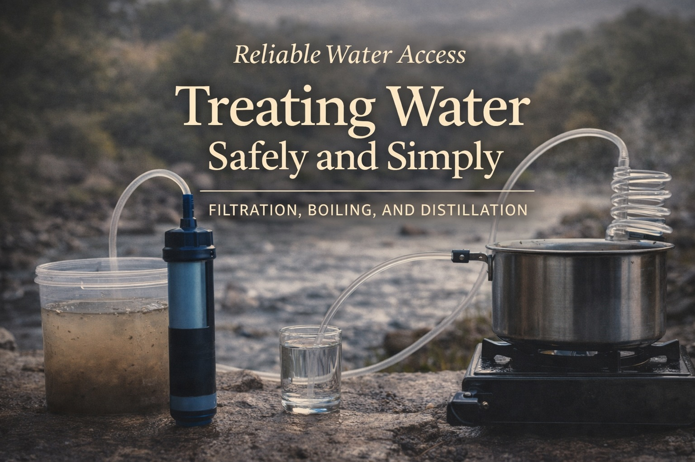

Reliable Water Access: Treating Water Safely and Simply
Last updated: February 2026

Water treatment becomes more reliable when methods are simple enough to perform correctly under stress. The goal is not maximum sophistication. The goal is confidence, repeatability, and practical safety when normal systems become uncertain.
- Simplicity increases reliability. The best method is one you can use correctly every time.
- Not all threats are equal. Treat based on realistic risks, not worst-case scenarios.
- Redundancy beats sophistication. Two simple methods are better than one complex system.
- Clarity compounds. So does confusion under stress.
Purpose
Help readers build practical confidence in water treatment through simple, repeatable methods that remain understandable and reliable during disruptions.
What makes water unsafe
Water becomes unsafe for a few predictable reasons: microbial contamination, chemical exposure, and sediment or turbidity. Most everyday disruptions involve the first category.
Understanding the threat helps prevent overreaction. Many situations require basic treatment, not advanced filtration.
A calm hierarchy of treatment
Instead of chasing gear, think in layers. Reliable water treatment follows a simple hierarchy:
- Clarity first: remove visible debris.
- Disinfection next: address microbes.
- Filtration when appropriate: improve safety and taste.
You don’t need all methods at once. You need one you trust, plus a backup.
Boiling: boring, effective, dependable
Boiling remains one of the most reliable water treatment methods. It requires no chemicals, minimal equipment, and provides clear assurance when done correctly.
Its limitation is energy use. That makes it ideal as a primary or backup method, not necessarily the only one.
Chemical treatment: compact and flexible
Chemical disinfectants (such as tablets or drops) offer portability and long shelf life. They work well when instructions are followed and water is reasonably clear.
Their main drawback is taste and time. That tradeoff is often acceptable in short disruptions.
Filtration: useful, but not magic
Filters can remove sediment and many microorganisms, but they are not universal solutions. Flow rates, maintenance, and filter integrity matter.
A calm approach treats filters as one tool, not a single point of failure.
Distillation: slow, thorough, and independent
Distillation is one of the oldest and most complete water treatment methods. By evaporating water and condensing the vapor, distillation separates water from most contaminants — including microbes, salts, and many chemicals.
Its strength is completeness. Distillation does not rely on filters, cartridges, or chemical supplies, and it works even when source water quality is poor or unknown.
The tradeoff is speed and energy. Distillation is slow and requires heat, which makes it best suited as a deliberate, steady method rather than a high-volume solution.
In a resilience context, distillation excels as a reliable backstop. It provides confidence when other methods are uncertain, and it pairs well with simpler day-to-day approaches like boiling or filtration.
Avoiding complexity traps
Overly complex systems tend to fail when they are needed most. Multiple steps, precise measurements, or fragile components increase error under stress.
Choose methods that match your environment, energy availability, and attention span.
Practice before you need it
The best time to learn water treatment is before disruption. A short practice run builds confidence and reveals friction points.
Confidence reduces hesitation. Hesitation wastes time.
Next steps
This is the second article in the Reliable Water Access series.
- Securing Reliable Supply
- Treating Water Safely and Simply
- Using Water Wisely Under Constraint
This article is for general education. Always follow local health guidance during contamination events.